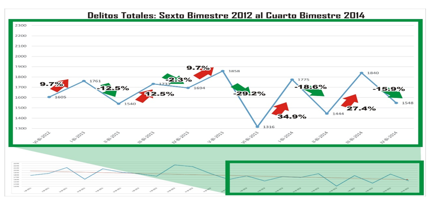
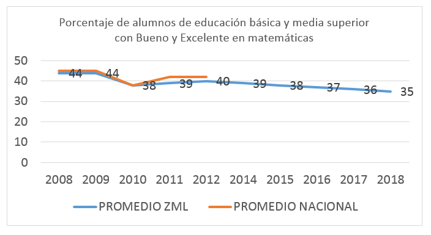
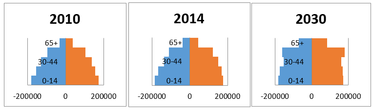

Desarrollo Social
Coordinador, Asesor y Secretario
| Función | Nombre Completo | Institución/Empresa |
|---|---|---|
| Coordinador | Cecilia Cardiel | Consejo de ONGs de la Laguna |
| Asesor | Alfredo Viesca | IMPLAN Torreón |
| Secretario | Melissa Rodríguez | IMPLAN Torreón |
Expertos Invitados
| Nombre Completo | Institución/Empresa |
|---|---|
| Alejandro Ahumada Rodríguez | IMCE |
| Clementina Aguilera Álvarez | Instituto de la Mujer |
| Dulce María Pereda Ezquerra | Instituto de la Mujer |
| Esteban Osorio D. | IMCE |
| Jorge Luis Caballeros | UAL |
| Manuel de Jesús Morán Castillo | Dirección de Sanidad |
| Marcela Castañeda Agüero | Subsecretaría Prevención Social |
| Margarito Nava Martínez | QPN Torreón |
| Martha Alicia Lira Sifuentes | Instituto Tecnológico de la Laguna |
| Patricia Elizabeth Alcalá | Instituto de la Mujer |
| Roberto Gerardo Guillèn Navarro | Ciudadano |
Escenario tendencial a 10 años
La Zona Metropolitana de la Laguna en cuanto a desarrollo social se caracteriza por:
Municipios no saludables en los que los índices de morbilidad y mortalidad van en aumento deteriorando la calidad de vida de los habitantes y afectando la competitividad de la zona. Hay una alta demanda de servicios de salud y poca capacidad para responder a ésta.
- En 2010 la tasa de médicos por cada 10 mil habitantes fue de 3.8, en 2011 disminuye a 3.6, en 2012 la tasa es de 3.7 y en 2013 vuelve a disminuir a 3.5, número que no se presentaba desde 2007.
- La tasa de mortalidad en la ZML ha aumentado de 2000 a 2012 en un 30%. Pasando de 4.3 a 5.6 por mil habitantes.
- Desde 2010 se presenta un déficit importante en la cobertura a nivel nacional y esto se refleja en la ZML ya que si bien es cierto que en el municipio de Torreón se tenía un porcentaje considerable de cobertura del 86% en los otros municipios el déficit es de aprox. 30 % en Lerdo, 27 % en Matamoros y 26 % en Gómez Palacio.
- La disponibilidad de camas censables de los hospitales públicos ha aumentado sólo 9.5% en 12 años. De 158 a 173.
La falta de seguridad en la zona metropolitana genera gran desconfianza de la población hacia las autoridades. Las instituciones no cuentan con autoridad moral, se pierden inversiones y fuentes de trabajo. Los índices de criminalidad van en aumento deteriorando la imagen de la zona, impactando la economía y el turismo y provocando emigración de los habitantes a otros lugares más seguros.
- Los delitos totales tienen una tendencia a la baja partiendo de 2011. Sin embargo las fluctuaciones a partir del quinto bimestre de 2013 son pronunciadas. 
Ausencia de vocación educativa en la zona metropolitana que ocasiona rezago escolar y calidad académica deficiente en todos los niveles educativos. Las instituciones de educación superior egresan profesionistas de baja calidad que no están a la altura de las demandas laborales. Todo lo anterior contribuye a bajar sensiblemente la competitividad de la región y a desacelerar el desarrollo económico y social.
- El porcentaje de alumnos de educación media superior y predecesores presentarían para 2018 un cifra más baja que en 2008, a razón de un -2% anual. 
El rezago en infraestructura cultural ocasiona debilitamiento del tejido social ante la falta de cohesión y espacios de construcción de la identidad ciudadana y metropolitana y para el desarrollo cultural. El centro histórico se ha abandonado, no está clara la imagen ni la vocación de la zona.
- Las bibliotecas públicas en la ZML presentará un decremento de 18% en 2030. En 2011 una biblioteca prestaba servicio a 33,691 habitantes. Para 2030 sería de 27,517 habitantes, lo cual es positivo, más el ritmo no es el necesario para tener niveles como los presentados por el promedio nacional de 2011: 15,000 habitantes por biblioteca pública.
Poca atención a los grupos vulnerables que ha ampliado la brecha social de los más necesitados. No se destinan recursos, ni espacios para la atención especializada a los sectores menos favorecidos de la sociedad, casi no existen programas de inclusión social. Se agudizan la discriminación y marginación acentuando así los niveles de pobreza y desigualdad social.
- La cantidad de adultos mayores en la ZML para 2020 será de 104,688, con un crecimiento del 27%.
- Proyecciones de población de la ZML por grupos de edad: 
- La población discapacitada en la ZML es de 52,418 (2010) para el 2030 se calculan 64,474.
- La mujeres menores de edad que tienen su primer parto en la ZML es del 16.8%, en Torreón la tendencia ha sido a la baja, aunque de 2012 a 2013 se incrementó en un 48%.
Problemas a atender en orden de importancia:
| Problema a atender | Promedio |
|---|---|
| Falta de seguridad | 3.6 |
| Municipio no saludable | 3.4 |
| Ausencia de vocación educativa | 3.0 |
| Rezago en infraestructura cultural | 2.6 |
| Poca atención a los grupos vulnerables | 2.5 |
Bienvenida
Hora de inicio: 09:12 a.m.
El Lic. Eduardo Holguín da la bienvenida y le concede la palabra al Arq. Rafael Pérez Fernández.
Introducción
El Arq. Rafael Pérez Fernández expone los objetivos del Plan Estratégico Metropolitano.
Introducción por Lic. Rodrigo González Morales: Explicación de los resultados de la mesa anterior, presentación de los indicadores y futuros tendenciales de cada uno de los problemas de cada temática.
El Arq. Rafael Pérez explica la mecánica del evento. Que en la elección de futuro deseable se llenará un formato de manera individual; luego se realizarán rondas para enriquecer de 15 minutos tomando nota de forma conjunta e interactiva. Al final se hará la integración y propuestas de objetivos y metas.
Visión – Futuro Deseable
Problema 1. Falta de seguridad
- Una policía de carrera eficiente, con educación y con sueldos y prestaciones remunerados, sociedad apoyada por esta misma.
- Disminuir la tasa de delitos 60 %, en la zona metropolita así como la victimización de los habitantes.
- Abatir los índices de criminalidad; Recuperamos la confianza de la población.
- Personal confiable y con enfoque en prevención de delito.
- Confianza en todos los sectores, mínima inseguridad.
- Una ciudadanía cívicamente educada.
- Alto índice de confianza en la población, confianza en autoridades e instituciones.
- Autoridades gozan de credibilidad, seguridad de las mujeres.
- Torreón incluyente para inversión mano de obra remunerada, respeto a los recursos naturales, zona metro segura.
- Contar y cumplir con indicadores de seguridad, cumplir 95 % de indicadores, fortalecer cultura de la legalidad. Prevención del delito.
- Una vinculación con las instituciones educativas para poder regularizar los recursos. Participación ciudadana en la prevención social.
- Erradicar la corrupción en las instancias de seguridad.
- Que se llenen los demás espacios con cosas concretas. Y visión concreta para poder aterrizar.
Problema 2. Ser municipio saludable
- Especialistas atendiendo a las personas enfermas.
- Disminuir los índices de morbilidad, acceso a salud de calidad para todos.
- Prevención de enfermedades, eficiente infraestructura en sector salud.
- Cultura de prevención, además de alta calidad en atención médica.
- Zona metropolitana física y clínicamente sana.
- Llegar a tener índices bajos y controlados.
- Aumento de atención a la población, calidad en servicio público y control sanitario.
- Municipio saludable.
- Programas Federales, Estatales y Municipales coordinados para que se apliquen en el área de salud necesarias.
- Ciudadanos conscientes.
- Lograr acceso completo por parte de todos los ciudadanos a los servicios de salud. Lograr un estándar a nivel mundial.
- Lograr el estándar de municipio saludable, respetando las leyes y reglamentos.
Problema 3. Vocación educativa para una adecuada vinculación con el desarrollo social.
- Incrementar en las escuelas un análisis de vocación profesional acorde con el desarrollo económico de la Ciudad.
- Combatir rezago escolar, aumentar la calidad en la formación de investigadores en áreas científicas.
- Multiplicación de programas de vinculación con la población, redirigir la atención a grupos de todo tipo, vulnerable, no vulnerable.
- Se cumple con los estándares de calidad de la UNESCO, que se escoja una vocación universitaria específica en la comarca lagunera.
- La zona metro opera con 4 dimensiones sociedad, instituciones de educación, gobierno y empresas.
- Sustento académico desde el kínder a la universidad, de la misma forma sustento para desarrollarse.
- Aumento en la calidad de la educación, aumentar las licenciaturas a nivel humanístico.
- Enfoque de vocación en áreas que la sociedad requiere.
- Las universidades se sustentan en base al desarrollo social
- Formar ciudadanos del mundo respetuoso.
- Vincular al educador con el educando. (Se menciona ejemplo de las adolescentes embarazadas en la actualidad ) Existe una desvinculación entre el profesor y el alumno, la educación atiende este aspecto.
- Formación de ciudadanos responsables
- Desde kinder y todos niveles se incluya curricular desde valores trabajo en equipo.
- Formación de ciudadanos responsables.
- Disminuir los índices de deserción escolar en secundaria y preparatoria.
- Nota: Se integra al temas ciudadanos responsables que denuncian los atropellos
Problema 4. Problema
- Desarrolla en escuelas elementos de arte como musca, pintura.
- Incrementa la calidad y cantidad de programas culturas y espacios públicos en un 50%, aumenta las bibliotecas e inmuebles históricos.
- Multiplicación de espacios en cada barrio de la ciudad. Promoción de actividades de convivencia.
- Dos niveles de infraestructura cultural. Todo tipo de artes, espacio de aprendizaje, otro espacio de disfrute.
- Ser líder en desarrollo cultural y deportivo en el país.
- Espacios distribuidos culturales y que se atienda las diferentes necesidades.
- Alto porcentaje con acceso a centros culturales integrales. Promotores culturales y creadores. Acceso gratuito.
- Identidad del ciudadano con su ciudad.
- Se proyecta como zona turística espacios limpios cuidados, colonias espacios públicos accesibles.
- Fusión entre respeto de la modernidad con raíces.
- Disminuir la brecha cultural y deportiva, infraestructura que promueva la cultura.
- Adaptada con accesibilidad y atraer a turismo, discapacidad de lugares denotar desarrollo del área.
Problema 5. Problema
- Compromiso a trabajar con grupos vulnerables, aumentar pensión de jubilados.
- Disminuir índices de pobreza.
- Vinculación de los programas institucionales de organismos públicos específicos.
- Infraestructura para movilidad, atención a personas vulnerables, cultura de ayuda.
- Reducción en las carencias, atención completa.
- Fomento en las ONG y mayor apoyo.
- Centros especializados para cada grupo vulnerable.
- Programas sociales para disminuir grupos vulnerables.
- Acceso a los servicios de salud al 100% mecanismos de bienestar físico.
- Trabajo conjunto entre sociedad civil, gobierno y empresas, se trabaje con la sociedad, apego a las leyes
- Identifica y monitorea a grupos vulnerables.
La mesa termino antes de lo previsto la actividad por lo que se tomo un breve receso.
Propuesta de objetivos y metas
Se integraron las visiones y se agregaron a las que ya se tenían por parte de la mesa. Se llenaron los formatos.
Conclusión
Se establecieron las conclusiones de la mesa.
Agradecimiento y despedida
Hora de término: 01:08 p.m.

{kind=link}
{kind=link}
{kind=link}
{kind=link}
{kind=link}
{kind=link}
{kind=link}
{kind=link}
{kind=link}
{kind=link}
{kind=link}
{kind=link}
{kind=link}
{kind=link}
{kind=link}